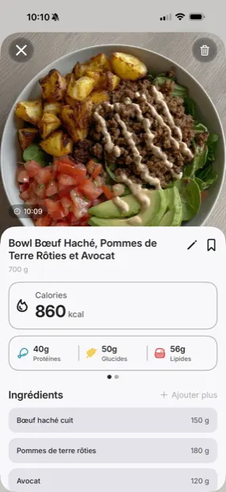
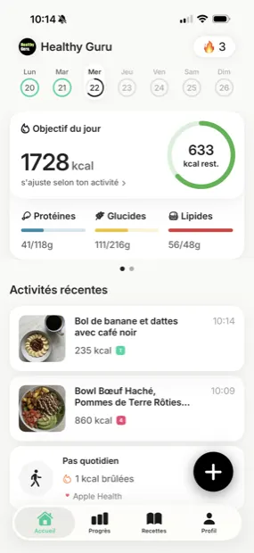
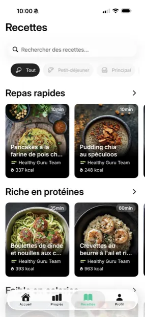

Tailored nutrition plan
A personalized plan that adapts to your weight, activity, and goals — and evolves as you do.
Log any meal in seconds and track your calories, macros, and micronutrients to reach your goal.



A personalized plan that adapts to your weight, activity, and goals — and evolves as you do.
Barcode, food database, AI photo analysis, manual entry, or your own custom recipes — log every meal the fastest way, down to the detail.
Your daily activity is tracked precisely through Apple Health or your smartwatch — with manual entry always an option.
Clear charts track your progress so you can stay on course, week after week.
Answer a few quick questions and we'll calibrate your targets — calories, macros, and micronutrients made for you.
AI photo analysis, barcode, database, or manual entry — whatever's fastest. No tedious typing required.
Clear charts show your results so you can stay on course, day after day.
"Amazing — no more hunting for foods: everything is recognized from a photo. The suggested macros are great, I eat my fill and the tracking finally gives me a real picture of things."
"The photo capture, calorie tracking and recipes keep getting better. The app is really intuitive and easy to pick up. It's become an essential part of my daily routine!"
"A wonderful app, with a plan that actually works. It's helped me so much — I highly recommend it. Thank you, Healthy Guru!"
You can download and try Healthy Guru at no cost. Premium features unlock advanced plans, deeper insights, and unlimited tracking.
Our model is trained on a wide range of cuisines and portion sizes. You can fine-tune any estimate in one tap, and the app learns from your corrections.
Yes — from sushi to tagine to a homemade salad. If something looks off, a quick edit teaches the model your habits.
Absolutely. Calories, protein, carbs, fats, fiber, and the key vitamins and minerals — all in one place.
Your data stays yours. We use it only to power your experience. See our Privacy Policy for the full breakdown.
Free to download. No account required to start.
Download on the App Store